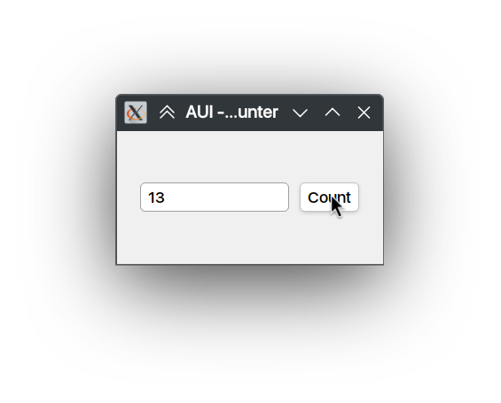
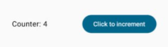

- Note
- This page describes an example listed in 7GUIs.
- Simple counter.

Challenge: Understanding the basic ideas of a language/toolkit.
The task is to build a frame containing a label or read-only textfield T and a button B. Initially, the value in T is “0” and each click of B increases the value in T by one.
Counter serves as a gentle introduction to the basics of the language, paradigm and toolkit for one of the simplest GUI applications imaginable. Thus, Counter reveals the required scaffolding and how the very basic features work together to build a GUI application. A good solution will have almost no scaffolding.
#include <AUI/Platform/Entry.h>
#include <AUI/Platform/AWindow.h>
#include <AUI/Util/UIBuildingHelpers.h>
#include <AUI/View/AButton.h>
#include "AUI/View/ATextField.h"
using namespace declarative;
class CounterWindow:
public AWindow {
public:
CounterWindow():
AWindow(
"AUI - 7GUIs - Counter", 200_dp, 100_dp) {
Horizontal {
it->setEditable(false);
},
},
});
}
private:
AProperty<int> mCounter;
};
_new<CounterWindow>()->show();
return 0;
}
void setContents(const _< AViewContainer > &container)
Moves (like via std::move) all children and layout of the specified container to this container.
emits clicked
Left mouse button clicked.
Definition AView.h:933
Represents a window in the underlying windowing system.
Definition AWindow.h:45
static decltype(auto) connect(const Signal &signal, Object *object, Function &&function)
Connects signal to the slot of the specified object.
Definition AObject.h:86
#define let
Performs multiple operations on a single object without repeating its name (in place) This function c...
Definition kAUI.h:262
#define AUI_ENTRY
Application entry point.
Definition Entry.h:90
Comparison to Jetpack Compose#
Here's implementation of the same app with Jetpack Compose:
package ...
import ...
class MainActivity : ComponentActivity() {
override fun onCreate(savedInstanceState: Bundle?) {
super.onCreate(savedInstanceState)
enableEdgeToEdge()
setContent {
CounterTheme {
Counter()
}
}
}
}
@Composable
fun Counter() {
var counter by remember { mutableIntStateOf(0) }
Row(
verticalAlignment = Alignment.CenterVertically,
modifier = Modifier.fillMaxSize(),
horizontalArrangement = Arrangement.SpaceAround
) {
Text(text = "Counter $counter"),
Button(onClick = { counter++ }) {
Text(text = "Click to increment")
}
}
}

| AUI | Kotlin |
| State | Inside class | Local variable (remember) |
| Vertical | Column |
| Horizontal | Row |
| Display | AObject::connect(mCounter.readProjected(AString::number<int>), it->text()); | Text(text = "Counter $counter") |
| Increment | Button { "Count" }.connect(&AView::clicked, [&] { mCounter += 1; }) | Button(onClick = { counter++ }) |
AUI tend to have longer expressions but does not differ that much. Jetpack Compose is an immediate mode UI, whereas AUI is a retained mode UI.
Source Files#